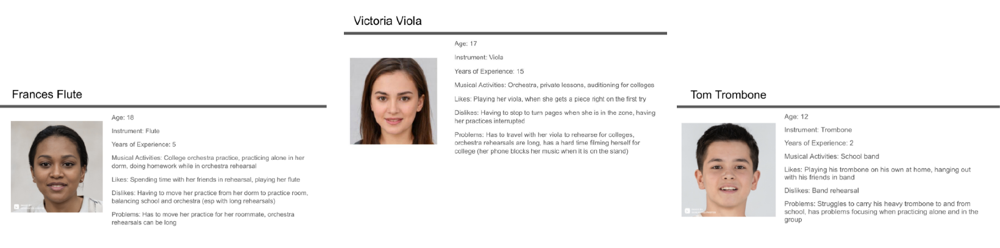
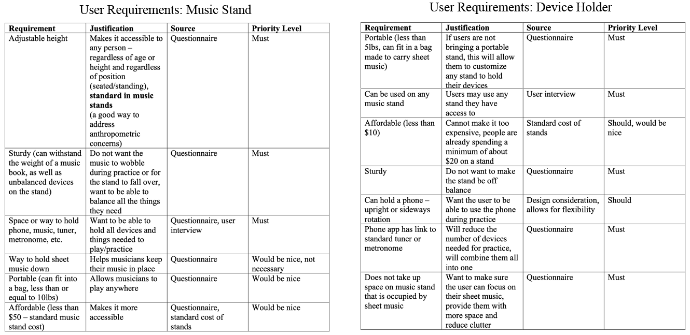
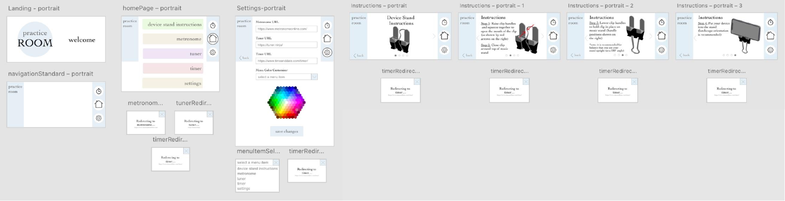

Device Holder & App
Spring 2021
This product is a clip that can be attached to a music stand to hold a phone as well as an app called Practice Room, which supplies musicians with a tuner, metronome, timer, and instructions for how to use the stand clip. Many music stands are cluttered and crowded when musicians try to balance different objects and devices along with their sheet music. This product will hold the phone above the stand, so people can still see it, and it will not be in the way while the music stand is in use.
Practice Room, the app that is designed to accompany this product, provides users with links to an online tuner, timer, and metronome, as well as instructions for how to use the stand clip. Although the user can put their own tuner or metronome into the stand clip, this app provides them a single location to access the different devices they may need.
Target Users
The target user for this product is a teenager (aged 10 – 19) who plays music and uses a music stand. Teenagers often do not have the same resources as professional musicians, so their stands do not have the space for their practice devices, such as tuners or metronomes, as well as their sheet music. I first created three user personas to understand my target users and guide future research. These personas reflected users of different ages, experience levels, and amount of commitment to their music.

User Research
I started by research by conducting a preliminary interview with a target user. From this, I was able to construct a behavioral task analysis, as well as a more in depth cognitive task analysis. This focus on the process allowed me to better understand the needs of the users. The biggest difficults that the user identified were:
- Turning pages in her book
- Muting and unmuting herself on zoom
- Being able to fit everything she needed for practice on the music stand (tuner, metronome, phone, sheet music)
I then continued to send out a questionnaire to other target users to see if these findings were consistent. I found that all respondents use sheet music and or music books, and most musicians use their tuner, metronome, or phone as well. I learned that all users own their own music stand, which means they have to adapt to different conditions based on resources. I also asked had users what characteristics they looked for most in a stand. All respondents reported that they look for a stand with adjustable height as well as space to hold all of their objects. I also found that most respondents value sturdiness over portability, so in designing my product, it was more important to make the phone or device holder portable and sturdy, since it participants would be using available stands rather than bringing their own.
User Requirements
From my research, I was able to create a list of user needs for my design, as well as an understanding of what users are looking for when playing their music (shown on the left). I then used this information to create a list of needs for my device, which would help solve the problem of a cluttered or crowded music stand (shown on the right).

Anthropometric Concerns
I started by researching similar existing products and found that I could create a clip, roughly the size of a binder clip.I then went on to consider the intended demographic’s average hand and grip, as well as standard phone sizes to determine the ideal clip size.Most people would use one of two grips to hold open a clip:
- Thumb-Finger Palmar Grip (Pad Pinch) – where the thumb pad opposes the palmar pad of at least one finger near the tips
- Thumb-Forefinger Side Grip (Lateral Grip or Side Pinch – where the thump opposes the side of the forefinger at its middle phalanx
Both of these grips give people leverage over the clip, and you want to make sure that the handle can fit onto the thumb pad, so it easy to press the clip open.
I compared the data of average adult hand with the average 10-year-old sized hand, since 10-year-olds are the bottom end of my demographic. Making sure my product is designed for adult hands, it would be suitable for older teenagers as well, and ten-year-olds provide a baseline comparison to make sure it would be usable by my entire demographic.
I used the ratios of the average 10-year-old hands and the average adult hands to find the ratio of the average ten-year-old thumb width. If the average 10-year-old hand is about 91.21% the size of an adult hand, the average ten-year-old thumb width would be about 1.92 cm.
I used a binder clip to make the clip part of my device stand, and I considered thumb width when selecting a binder clip. I chose a binder clip, which has handles that are 2 cm at the widest point and only 1 cm at the thinnest point. This way, it is ideal for the middle 95% of my demographic, but not unusable by people with smaller or larger hands.
Biometric Concerns
I first conducted REBA and RULA assessments without the product to establish a baseline and understand where stress and strain might already be coming from in a playing position. I focused on playing a violin, not only because it was the person I had access to, but because it has a more physically demanding posture than other instruments typically do. Violinists usually stand when playing alone, and they must hold the instrument under their chin, while they still look at the music stand. Other instruments typically are able to sit or can face their stand directly and do not have to use their chin to stabilize their instruments.
- REBA without device: 7 – medium risk, evaluate and investigate
- RULA without device: 5 – medium risk, evaluate and investigate
These scores were both relatively high, which is largely due to the neck position required to stabilize one’s violin. However, the music stand is not contributing to the problem. I then conducted REBA and RULA assessments of a musician with the device attached to the stand.
- REBA with device: 7
- RULA with device: 5
I found that the REBA and RULA assessments remained unchanged. However, if the person were to look up at the phone, it could change the angle of the neck, but not enough to change the RULA or REBA scores. The full RULA and REBA assessments are below.
App Design & Development
My main objective with this app was to create a straightforward layout that allows users to find what they are looking for easily. I started my app design by creating a concept map, which is shown below. This allowed me to plan how the app’s navigation would work and how many different pages there would be.
Next, I created my initial iteration of the app wireframe. I made the home screen into a main menu that allows users to go straight to the stand instructions, tuner, metronome, timer, or settings. I also made every page in both a horizontal and vertical orientation, because the phone balances best in the device stand when in a horizontal orientation, but vertical is usually the more standard orientation for apps. Ideally both would be in the same app, but for the purpose of usability testing, I made it into two flows. The settings tab allows users to change the colors on their home screen as well as the links used for the tuner and metronome if they have a preferred tuner or metronome website.
My main three priorities were effectiveness, efficiency, and satisfaction. The app provided users with the technology they needed when playing their instrument, and it connected every feature to the main menu, which is accessible from every page. This made the app efficient and effective, as it is easy for users to reach each feature in a minimal number of clicks. Satisfaction is more subjective, and I provided customizability, so all users could make the colors and links fit their personal preferences and increase satisfaction.
To view my initial wireframe, here is the link to the horizontal version, and here is the link ot the vertical version.
Final Product Usability Testing
Next, I conducted usability tests on the app and physical prototype. I developed a list of questions and tasks that I had the users walk me through to understand the effectiveness, efficiency, and satisfaction they experienced when using the app.
To gather effectiveness and efficiency, I started by asking each participant to describe the home screen and tell me what they were looking at. I then asked them to walk me through how they would set up their device stand. Next, I had users show me how they would go to the tuner, timer, and metronome. Finally, users were asked to walk me through the settings tab. These tasks allowed me to see whether the app worked for the users and how long it took for them to understand how to get from one page to the next. Satisfaction was more challenging to understand, so I ended all user tests by asking the users to explain what they liked about the app and what they would change. This allowed me to get a holistic review, as well as the feedback from users as they went page by page on the app.
Feedback
I received minimal feedback on the physical prototype device stand. One user said that she was not satisfied with how far it made her phone lean back.
The feedback I received towards effectiveness and efficiency was positive. Users were easily able to navigate the app and find what they wanted. In the initial walk-through, all of the users said that they liked the instructions and illustrations because they were clear and intuitive.
The user’s satisfaction with the app was where I saw the most room for improvement. Most users found the settings tab slightly confusing, specifically the color selector. They were confused by how to select what item they were choosing the color of and were unsure about what the select item button was. One user also pointed out that the tuner and metronome links could be customized, but that the timer could not be customized. Another user also suggested that the dots that show progress in the instructions should be interactive, so it would make it easier to jump from page to page if you wanted to revisit a specific step.
Iteration & Final App
In response to the feedback, I focused on altering the settings tab. I changed the color customizer selector button to a drop-down menu. I also added a place for users to change the timer link. In the instructions tab, I added functionality to the progress dots at the bottom of the instructions that would allow users to access any step in the instructions without using the arrows and having to click through. To improve the experience with the physical stand, I also added a note in the instructions about how far back the stand should be ideally angled with the device clip attached, since it is easier to see when the stand is at a 180-degree angle.Finally, I referred back to Nielsen’s design heuristics and decided to add a return button on every page except for the home page, because although no users pointed that out, it is a standard component of interface design that the app was missing.
The final iterations of the wireframe can be found at this link (horizontal) and this link (vertical), and images can be found below.

Reflection
Overall, my project went smoothly. My largest challenge was coming up with a specific solution after starting with a broad research question. I initially contemplated designing a full music stand, but Professor Intriligator helped me narrow my focus to just an attachable device stand and accompanying app. This helped me hone my focus and direction as I moved from research process into designing and prototyping my product.
I wish that I had been able to access more users and participants for my questionnaire. I was able to find a sample that was very representative for my questionnaire, but not as much for my usability testing, since I tried to conduct that in person.
I tailored my design and research to fit the user and focused on empathizing and understanding. Rather than focusing on what I thought would be best in my prototype design, I focused on the user needs that I found through my research. I found that the task analysis and questionnaire were the most informative parts of background research, and the usability testing was very useful in iteration of the prototype app. Not only did I consider the anthropometry of my target users, but I also focused on appealing to what would suit their processes and more behavioral needs, and this allowed me to create a holistic, effective solution.